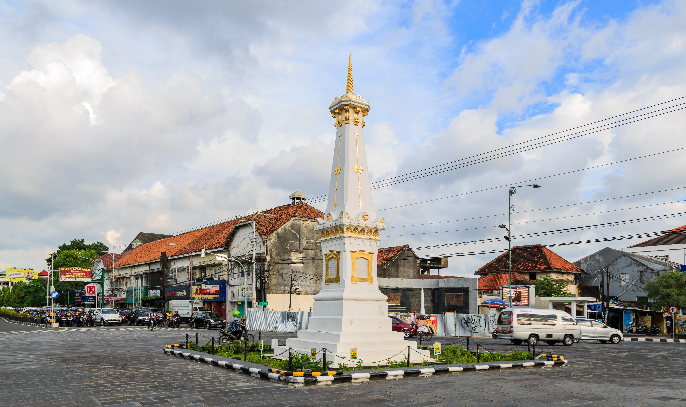
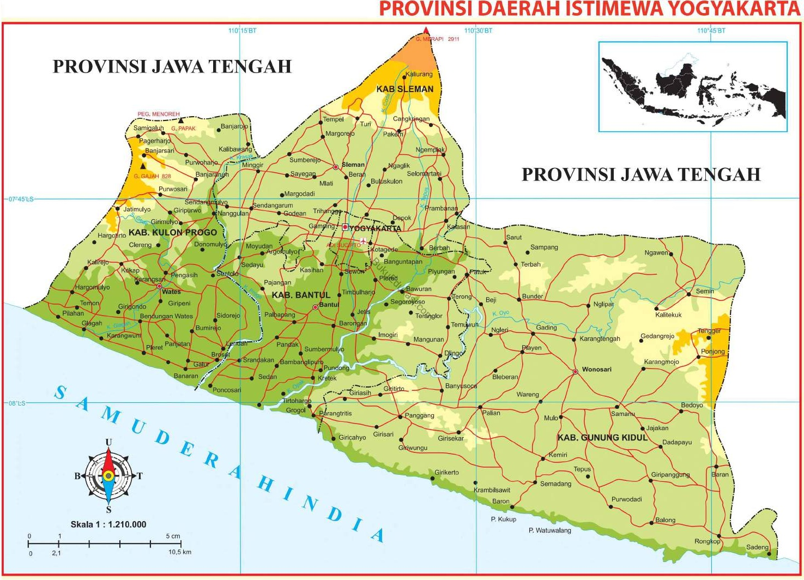
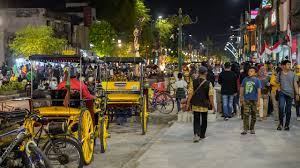
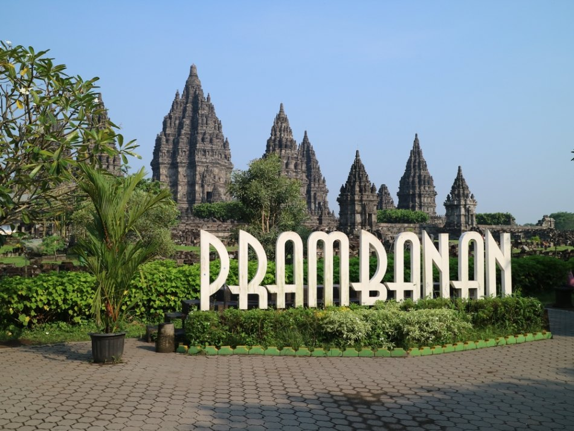

Sejarah

Yogyakarta memiliki sejarah panjang sebagai salah satu pusat kebudayaan dan pemerintahan di Indonesia.
Kota ini berdiri pada tahun 1755 setelah Perjanjian Giyanti yang membagi Kesultanan Mataram menjadi dua,
yaitu Kasunanan Surakarta dan Kesultanan Yogyakarta, dengan Sultan Hamengku Buwono I sebagai pendiri Kesultanan
Yogyakarta. Pada masa perjuangan kemerdekaan Indonesia, Yogyakarta pernah menjadi ibu kota Republik Indonesia
pada tahun 1946–1949. Karena perannya dalam mempertahankan kemerdekaan, Yogyakarta memiliki kedudukan
istimewa hingga sekarang dan dikenal sebagai Daerah Istimewa Yogyakarta (DIY). Selain memiliki nilai sejarah
yang kuat, Yogyakarta juga terkenal sebagai pusat pendidikan, seni, dan budaya Jawa.
Seiring perkembangan zaman, Yogyakarta terus menjadi salah satu daerah penting dalam sejarah Indonesia.
Setelah kemerdekaan, Yogyakarta berkembang sebagai pusat pendidikan dan kebudayaan, terutama dengan berdirinya
Universitas Gadjah Mada pada tahun 1949. Berbagai peninggalan sejarah seperti Keraton Yogyakarta, Taman Sari, dan
kawasan Malioboro menjadi bukti perkembangan kota dari masa ke masa. Hingga kini, Yogyakarta tetap dikenal sebagai
kota budaya dan pelajar yang memiliki tradisi Jawa yang kuat serta menjadi salah satu tujuan wisata penting di Indonesia.
Geografis

Yogyakarta terletak di bagian selatan Pulau Jawa dan berbatasan langsung dengan Provinsi Jawa Tengah di sebelah utara,
timur, dan barat, serta Samudra Hindia di sebelah selatan. Daerah Istimewa Yogyakarta terdiri dari empat kabupaten, yaitu
Bantul, Sleman, Kulon Progo, dan Gunungkidul, serta satu kota, yaitu Kota Yogyakarta. Wilayahnya memiliki kondisi geografis
yang beragam, mulai dari kawasan perkotaan, dataran rendah, perbukitan, hingga pegunungan.
Secara geografis, Yogyakarta memiliki Gunung Merapi di bagian utara dan kawasan pantai di bagian selatan. Sungai-sungai
seperti Sungai Code, Gajah Wong, dan Opak mengalir di wilayah Yogyakarta dan berperan dalam kehidupan masyarakat.
Kondisi tanah yang subur, terutama di wilayah sekitar Gunung Merapi, mendukung kegiatan pertanian. Keanekaragaman bentang
alam tersebut juga membuat Yogyakarta memiliki berbagai potensi wisata, seperti wisata pegunungan, pantai, gua,
dan kawasan pedesaan.
Wisata
Yogyakarta merupakan salah satu daerah wisata terkenal di Indonesia yang memiliki beragam tempat menarik. Wisatawan dapat
mengunjungi Keraton Yogyakarta untuk mengenal budaya dan sejarah Kesultanan Yogyakarta, serta Malioboro yang terkenal
sebagai pusat belanja dan kuliner. Selain itu, terdapat Candi Prambanan, Pantai Parangtritis, dan berbagai wisata alam
seperti kawasan Gunung Merapi dan Goa Pindul. Keberagaman wisata tersebut membuat Yogyakarta menjadi tujuan yang menarik
bagi wisatawan yang ingin menikmati sejarah, budaya, kuliner, dan keindahan alam.
Kawasan Wisata Malioboro

Kawasan Wisata Malioboro merupakan salah satu tempat wisata paling terkenal di Yogyakarta yang menjadi pusat kegiatan
isata, belanja, dan kuliner. Di sepanjang Jalan Malioboro, pengunjung dapat menemukan berbagai toko, pedagang kaki
lima, pusat oleh-oleh, serta kerajinan khas Yogyakarta seperti batik dan aksesori. Kawasan ini juga dekat dengan
berbagai tempat bersejarah, seperti Keraton Yogyakarta dan Titik Nol Kilometer. Suasana Malioboro semakin ramai pada
sore hingga malam hari, sehingga menjadi tempat yang sering dikunjungi wisatawan untuk berjalan-jalan, berbelanja, menikmati
kuliner, dan merasakan suasana khas Kota Yogyakarta.
Candi Prambanan

Candi Prambanan merupakan salah satu tempat wisata bersejarah yang terkenal di Yogyakarta dan terletak di perbatasan Daerah Istimewa
Yogyakarta dan Jawa Tengah. Candi ini merupakan kompleks candi Hindu yang dibangun sekitar abad ke-9 dan didedikasikan kepada
tiga dewa utama dalam agama Hindu, yaitu Brahma, Wisnu, dan Siwa. Candi Prambanan memiliki bangunan yang tinggi dan indah,
dihiasi relief yang menceritakan kisah Ramayana. Keindahan arsitektur, nilai sejarah, dan kebudayaannya menjadikan Candi
Prambanan sebagai destinasi wisata yang sering dikunjungi oleh wisatawan lokal maupun mancanegara.